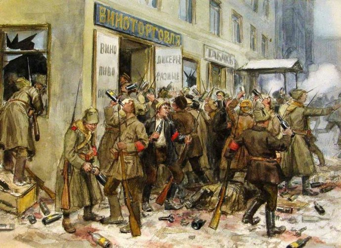
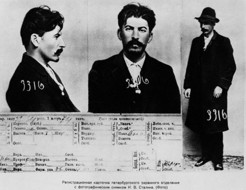

作者：幻想狂劉先生
链接：苏联往事-所有人对所有人的战争
悲剧只有两种，得不到你想要的，和得到你不想要的。—《战争之王》
一、沙皇俄国的原罪
迄今为止，世界上还没有一个历史学家对俄罗斯民族对土地的病态迷恋和渴望作出一个完全合理的解释，但他们都完全同意一点，那就是俄国佬的领土扩张速度是惊人的，从1547年伊凡雷帝第自称沙皇开始到1917年罗曼诺夫王朝覆灭，沙俄的版图从280万平方公里扩张到2280万平方公里，增长了七倍，平均每天扩张50平方英里，在18世纪中叶到19世纪末的150年中，沙俄平均每年扩张出相当于一个荷兰的领土。
这是一个恐怖的速度，作为中国人对这个速度最直观的感受，就是如果不是1914年日本在朝鲜和东北的国运豪赌以及沙俄在一战中的惨败，你坐火车刚出山海关，很可能已经行进在苍茫的俄罗斯大地上了。
沙俄对东北的扩张在日俄战争中受到了重挫，这场“非正义”的争霸战争意外阻止了东北落入沙俄囊中。
与英国人热衷于培养殖民地上层人物来实现委任统治，方便自己做生意不同，沙俄基于其农奴制国家的基本性质和军事封建的传统，采取了相当不同的殖民策略，那就是制造广袤的土地和无数赖以为生的农奴，简单的讲就是人走（杀）地留，用武力屠杀和驱逐那些不适合农奴制的原住民（比如中国人），然后用俄罗斯移民来充实这些土地，这种残酷的手段毫无疑问的会激起原住民的激烈反抗，因此俄国人的扩展和殖民具有极大的冒险性和疯狂性，1868年，康斯坦丁·考夫曼（Константин Петрович фон-Кауфман）居然只用658个人就骗取了中亚名城撒马尔罕，并在之后的保卫战中击退了五万人的穆斯林援军，简而言之。
俄罗斯式的殖民扩张模式的精髓，就是既不把别人的命当命，也不把自己的命当命。
1900年，侵入中国东北的沙俄军队，沙俄的扩张行动通常具有极大的军事冒险性。
基于这种殖民扩张模式，沙俄一方面阻碍殖民地的工业发展，力图使其保留在原料产地的状态，另一方面对殖民地的天然资源和农业产品进行不计后果的残酷剥削，同时对非俄罗斯民族实行愚民统治，强迫少数民族接受俄罗斯的语言和宗教，用屠杀消灭不合作的个体。
因此，殖民地的经济衰退和人口锐减是不可避免的后果，以哈萨克斯坦为例，从19世纪中叶到20世纪初，人口和牲畜数量均锐减了四分之一以上，这个世代以游牧为生的民族被迫把牧场开垦为农田，为沙俄生产棉花，到1905年，70%的哈萨克农牧民都已经破产或是处于濒临破产的边缘，不得不大量的越境逃亡中国新疆。到罗曼诺夫王朝灭亡的前夜，俄罗斯帝国已经发展成为一个名副其实的民族监狱。中亚征服者米哈伊尔·德米特里·斯科别列夫（Михаил Дмитриевич Скобелев）将军一语道破了沙俄对殖民地的统治之道：
“在亚洲，和平的长久与短暂是与你对敌人的屠杀直接成正比的，我认为这是一条定理。对他们打击得越凶狠，他们就安分得越长久”。

中亚征服者、屠城者米哈伊尔·斯科别列夫将军（骑白马者），他对中亚地区的征服伴随着一次又一次尸横遍野的大屠杀。
在这样的残暴的统治之下，俄罗斯民族和其他非俄罗斯民族注定不可能有什么和睦的关系，脱胎于这种母体中的苏维埃俄国，自然不得不继承这种天然的仇恨基因。侵略、扩张、殖民、屠杀和仇恨，构成了苏俄建立前夜民族问题的基本背景。
二、岌岌可危的苏维埃
建立在沙俄尸体上的赤色苏俄在新生的伊始处境就相当不妙，来自西方的武装干涉自不必说，由高尔察克将军和邓尼金将军领导的俄国临时政府，拥有一支由沙俄军官团和职业军人组成的精锐军队，军事素养和战斗力远比苏维埃政权从广大农村临时征召的“灰色牲口”要强——这些可怜的农奴可能在被拉上战场的前一天还拿着粪叉，如果不是抢来的伏特加和背后的督战队，他们通常在第一声炮响之后就会四散奔逃。

苏俄内战刚开始时的苏联红军是一群纪律涣散、军纪败坏，战斗力低下，形同匪徒的乌合之众。
更致命的是苏维埃政权在内战的初期没能控制主要的粮食产区，这使得苏维埃政权不得不在占领区实行残酷的战时共产主义制度，对富农、中农和贫农进行无差别的超经济剥削，被余粮征集队逼上绝路的哥萨克（他们多是有产者、自由民和职业军人）掀起了一轮又一轮反苏维埃叛乱（参加肖霍洛夫《静静的顿河》），使苏俄无法长期控制富裕的伏尔加河下游地区和乌克兰。
在这种四面树敌的困境中，苏俄政权不但要依靠同路人在自己的国家保卫苏维埃，更需要在国内获得最广泛的支持，鉴于俄国的核心区域大部分被白俄政权所占据，取得边疆地区人民的支持就显得尤为重要。
苏俄不得不实行“战时共产主义”政策，对农民进行无差别的超经济剥削，造成了大面积的饥荒，引发了此起彼伏的反抗。
三、列宁的“救赎”
因此作为世界共产主义运动和苏俄的领导人，在他的雇主德皇威廉二世被迫退位之后，列宁迅速把自己的目标由帮助德国摧毁沙俄转向建立世界上第一个社会主义国家，因此他对民族问题的思考和认识一开始就是基于对边疆少数民族地区稳定的需求，因而明显的带有补偿和拉拢的性质。具体落实到政策层面上，就是所谓的对沙俄“殖民原罪”的补偿和矫正，由此产生了列宁对民族政策理论的一个重要论断：
必须把压迫民族的民族主义和被压迫民族的民族主义,大民族的民族主义和小民族的民族主义区分开来”,“压迫民族或所谓`伟大’民族应当不仅表现在遵守形式上的民族平等,而且要处于不平等地位,以抵偿在生活中事实上形成的对被压迫民族的不平等”
这段拗口的论断实际上不难理解，翻译成人话就是俄罗斯人要为几百年的殖民扩张赎罪，在崭新的苏维埃国家中乖乖装孙子，并且自觉自愿的为少数民族买单，牺牲自己的利益来弥补这些沙俄统治下的受害者。
穷人通过“参加革命”，从带有“原罪”的富人那里“征用”财物的血酬定律，实际上与列宁式的民族政策异曲同工。
任何关于列宁在民族问题上天真幼稚、或是被“法国病”弄坏了脑子的指责都没有看出这种难以理解的自虐式民族政策背后的深刻原因。那就是在实行民族压迫政策的沙俄，只有俄罗斯民族相对来说受教育程度较高，而几乎每一个有文化的俄罗斯人，每一个神父、商人、投资者、地主、军官、政治家、艺术家、教师、学生、工匠、小业主、公务员，都是苏维埃政权天然的敌人。
1920年，逃离红色苏俄的贵族、资本家、军官、知识分子、地主和艺术家，他们有一部分来到中国，成为“白俄”
因此列宁想要在战场上战胜高尔察克和邓尼金这些身经百战的白俄将领，就不得不必须依靠托洛茨基（犹太人）、斯大林（格鲁吉亚人）、伏龙芝（罗马尼亚）、铁木辛哥（乌克兰人）这些在沙俄时代处于受歧视地位的少数民族，他不但利用他们去战场作战，或是去执行俄罗斯将领不愿意干的“脏活”（比如斯大林在察里津大量烧毁不合作的俄罗斯人村庄），更利用他们去牵制和防备那些曾是沙俄时代职业军人的俄罗斯族苏维埃将领们（他们后来多数死在大清洗中），尽管这些人在战场上的表现优异，但列宁对图哈切夫斯基这些沙俄时代的旧军官从骨子里始终有着深深的不信任感。
一个后来的苏联笑话清楚明白的表明了苏俄政权中这种微妙的民族关系：
为什么巡警总是三人一组？这是专门的安排，一个会阅读，一个会写字，而第三个人负责监视这两个知识分子。
列宁、托洛茨基、斯大林三套马车，三人都不是俄罗斯人。
四、被压迫者的逆袭
列宁的民族理论体系最重要三点是：“民族自治、民族自决、联邦主义”，列宁坚持把民族自治和民族自决写入宪法，这对沙俄时代饱受压迫的少数民族和殖民地人民拥有巨大的吸引力，列宁的这种看起来愚蠢的自虐式民族政策实际上在苏俄内战中起到了相当重要的作用，首先他赢得了少数民族的支持和边疆地区的相对稳定，苏俄在战争极其不利的情况下依然维持了自身在外蒙古的存在，而且在中亚获得了各个民族的支持，使内战失利的白俄军无法将中亚作为反攻的据点和基地，在红军的追击之下不得不窜入中国新疆流亡。
左起第一个是苏俄红军“中国营”的战士，多达数万的中国人参与了苏俄内战，绝大多数为红军而战。
旧沙俄军队有一种传统的偏见，即认为东亚人懦弱而缺乏尚武精神，不适合作战，在沙俄军队中的东亚人往往只能担任杂役和军夫，受尽压迫和歧视。而在苏俄内战中，以东干人马三成（同治回乱中逃亡中亚的回族人）和华人任辅臣为代表的东亚人均组织武装加入红军一方与白军进行残酷厮杀，在多次战斗中由华人组成的中国军团与白俄军最凶悍的哥萨克殊死搏斗，伤亡惨重亦不后退半步。足可见列宁的民族政策鼓动性之大。
列宁接见中亚东干人骑兵团首领马三成（中国回族人）
这种民族政策的弊端出现在多年之后，那些从苏联独立出来的民族国家正是根据当年的宪法中关于民族自治和民族自决的条文中，找到了法理依据。不少历史学家据此批评列宁的民族政策愚蠢且短视。
这种评论幼稚且相当不客观，他忽视了极权主义利维坦的特质——他们在诞生伊始就几乎必然的陷入四面树敌的困境，使得他们的任何政策都必须基于残酷现实的生存考虑，而无法考虑政策的持久性和长远影响，因此，损害主体民族的利益甚至不惜为国家埋下分裂隐患，来换取边疆地区的稳定和少数民族的忠诚，对苏俄政权来说简直是小菜一碟，布尔什维克在1918年的头三个月干掉的反对者比沙皇俄国建立400年以来处决的死刑犯还要多，如果俄国有一半的人口是苏维埃政权的反对者，那么布尔什维克会毫不犹豫的干掉二分之一的俄国人来为苏维埃续命，正如苏俄内战的红军政委说的那样：
一个真正的布尔什维克从不考虑今天做的事在明天的后果，因为首先要有明天！
革命不是请客吃饭！正在抢劫国际红十字会物资的苏俄红军。
五、哥萨克的末日
那么，是不是所有少数民族和族群都在列宁的民族政策中受益，或者说，列宁是否完全兑现了他关于民族自治和自决的承诺呢，答案是否定的。有一部分民族确实得到了补偿，和一些有限的自治权利，但另一部分民族不但未能得到任何好处，反而被剥夺了已有的权利，甚至遭受灭顶之灾。
其中比较典型的是哥萨克，哥萨克不是一个民族，却有着鲜明的民族特征和民族个性，从他们的自称（哥萨克的意思就是自由人）就可以看出他们的鲜明特质，他们实行土地公有、财产私有、兵农合一，耕战一体，始终保持高度自治，使用一种原始的民主制度选举头领，具有很强的军事动员能力和战斗力。哥萨克的这些特质决定了他是任何极权和专制制度的巨大威胁和天然敌人，在沙俄时代沙皇利用他们侵略性，把他们的战斗力和破坏力引向外部，依然不能完全制服他们。
在苏俄内战中，哥萨克发生了分裂，一部分哥萨克支持各路白俄政权，而一部分哥萨克支持苏维埃，红军中最有名的战斗英雄布琼尼、夏伯阳、柯楚别依都是哥萨克，也只有他们领导的骑兵军能在内战中与白俄军的哥萨克骑兵一较高下。
白俄军的哥萨克骑兵攻占了红军的炮兵阵地，凶狠的砍杀红军士兵。
列宁一边心怀忌惮的利用这些难以管束的人为自己作战，一边处心积虑的等待机会彻底消灭他们，因为他心理清楚的明白，无论他给这个族群再多的特权和利益，也不可能超过沙皇曾经给予他们的（哥萨克在沙俄时代免交赋税、享受俸禄、并且拥有相当大的行政、司法和外交权利），因此，彻底消灭哥萨克是苏俄基于其统治性质而作出的必然之举。
列宾名画《扎波罗热哥萨克致土耳其苏丹的回信》，画作本身和哥萨克的回信内容充分展现了哥萨克的鲜明个性。
1919年1月24日，在中部地区战局相对稳定之后，俄共（布）发布了关于镇压哥萨克的密令：
鉴于同哥萨克进行国内战争一年来的经验，必须承认，同哥萨克整个上层人物进行最无情斗争的唯一正确方法，是将他们一个不漏地全部消灭。任何妥协和动摇都是不能允许的。为此必须：
然后就是令人毛骨悚然的八条：
一、对哥萨克人中的富人采取大规模恐怖行动，将他们全部消灭；对直接或间接地反对苏维埃政权的所有哥萨克人采取大规模的、无情的恐怖行动。对哥萨克人中的中间分子要采取一切措施，以保证他们不再试图对苏维埃政权发动新的进攻。
二、没收粮食，并强迫把全部余粮交到指定地点，这里既指粮食，又指其他一切农产品。
三、采取一切措施为外地迁入的贫苦农民提供帮助，具备迁入条件的地方，都要组织他们迁入。
四、对迁入的“外地人”与哥萨克人在土地方面和其他一切方面都平等相待。
五、实行全面缴械，凡缴械日期截止后仍被查出武器者格杀勿论。
六、武器只发给外地人中的可靠分子。
七、完全恢复秩序之前，哥萨克镇的武装队仍要保留。
八、派驻哥萨克各居民点的全体政治委员均须十分坚定并始终不渝地贯彻本指示。
中央决定，通过有关的苏维埃机构来落实向农业人民委员部作出的保证：尽快制定切实可行的措施、让大批贫苦农民迁往哥萨克地区。
俄国共产党中央委员会
之后发生的故事在肖霍洛夫的作品《静静的顿河》中有详细，描写，在这里就不再赘述了。这些政策直接导致了在第二次世界大战中，残存的哥萨克大量的加入纳粹德军对苏联进行复仇作战，德军战败导致哥萨克遭到斯大林的第二次大清洗，最终作为一个族群彻底的消失在了历史上。
二战中纳粹德军的哥萨克部队，注意他们的哥萨克帽子上缀着的纳粹鹰徽。
推什么样的车，最后就遭什么样的车碾死——俄罗斯谚语
如果我们从理论角度分析列宁的民族理论及其一系列政策和手段，就不难发现实际上来自于马克思主义的成分并不太多，主要原因有这么几点，首先在马克思主义的革命理论体系中根本就没有考虑十月革命的一席之地，根据马克思主义革命理论，无产阶级革命应该首先在资本主义最发达的国家也就是西欧和美国首先爆发和成功，而不是在半封建的沙皇俄国，十月革命的成功本身就构成了对马克思主义革命理论的悖论（要么马克思是错的，要么十月革命压根就不是“无产阶级革命”）。其次，马克思主义革命理论认为一国不可能建成社会主义，世界各国应该同时进入社会主义，苏俄的“一国建设社会主义”理论本身就是对马克思的驳斥（一国建设社会主义论在当时引发了国际共运大论战）。第三点也是最重要的一点，就是马克思在任何关于民族问题的著作中，都没有提过可以通过损害主体民族利益来补偿少数民族来解决殖民帝国遗留民族问题的理论和方法。
当时俄国大部分布尔什维克都对马克思主义一知半解，许多人连马克思和恩格斯的画像也分不清
因此列宁以“以大补小，主体让步”“被压迫民族有天然的正义”“俄罗斯民族殖民原罪”为特征的民族学说的理论脉络实际上是很清楚的，他和马克思主义关系不大，主要还是革命的特殊时期采取的一种策略和手段，相比西方舶来的马克思理论，血缘反而贴近东方式的阴谋和权术。
一、斯大林的帝国
相比列宁让人难以捉摸的迷惑面目，他的继任者斯大林是一个“真诚”的多的人，其面目也更容易认清。许多人根据一些不确切的史料中的只言片语，认为列宁在临终时认清了斯大林的残暴本质，作出了阻止他上台的最后努力。实际上这是对苏俄革命史的无知，列宁自始至终都非常清楚这个高加索地区著名的老刑事犯的根底，他不但了解他的残暴性格，而且他还利用他的这种性格去做一些别人不愿意做的工作，比如1918年5月列宁派斯大林去察里津征粮并赋予他军事指挥权，说明他非常明白斯大林会怎样圆满的完成“征粮”任务，不出所料，斯大林一个接一个的烧毁了不肯交出最后余粮的村庄，顺顺利利的征收到了数额令列宁满意的粮食。历史上有些人是十句话里九假一真，斯大林就是那种只记住那一句真话的杰出人才，这句话就是列宁的另一个经典论断：
革命不是给戴白手套的人干的

斯大林其人是高加索地区的一位犯罪老手，列宁对此心知肚明
后世的许多历史学家认为斯大林在上位后违背了列宁的民族政策，甚至国内有人天真的认为如果不是斯大林，苏联会根据1919年7月25日发表的《对中国人民及中国南北政府的宣言》（史称加拉罕宣言），归还沙俄侵占中国的领土。这当然是天真幼稚的幻想，这份宣言根本没有国际法效力，即使斯大林不否认，也是废纸一张。这份宣言和列宁的那些关于民族自治和民族自决的政策一样，也是苏维埃的续命策略之一，这份宣言主要是为了稳定苏俄东部边境，避免中国对苏俄内战进行武装干涉，特别是打消中国对收复外蒙古主权再次尝试的念头。当苏维埃政权稳固之后，不管列宁死没死，死后是谁上台，都不可能再有人把这张空头支票当真了，到1937年，连发布宣言的加拉罕（Лев Михайлович Карахан）本人都被斯大林处决了，斯大林干脆说当时的宣言是翻译错误，愚弄中国人的把戏低级到了侮辱智商的地步。
当时中国的南北政府与人民均轻信苏俄的谎言，主张与苏俄签订平等条约，承认苏俄为正常国家
二、民族的识别与再造
因此，所谓斯大林破坏列宁的民族政策，搞大俄罗斯主义，实际上是对极权主义利维坦的特性缺乏基本认识而形成的错误论断，极权主义国家的统治集团和国民通常都有非常强烈的被害妄想症，总是幻想自己生存在一个强敌环伺，充满了敌对势力阴谋的环境中。因此利维坦的政策从不考虑长远影响，也不考虑和之前政策的延续性，朝令夕改，后一个政策全盘推翻前一个政策是稀松平常的事，只要能够维护统治的稳定性和安全性，他们完全不在乎随时随地对之前的自身进行全盘否定，更何况斯大林只是进行了修正，只不过摘掉了白手套而已。
斯大林实际上完全继承了列宁这一套“生存策略”，并且进行了发展，因为他的政权已经相对稳定，他把列宁对各个少数民族雨露均沾式的恩惠，变成了有选择性的恩典，再加上残酷的惩罚手段，形成了一套恩威并重的民族政策，这其中之一，就是创造性的发明了“民族”的概念，并由此启动了规模浩大的民族识别和民族再造。斯大林在其著作《马克思主义与民族问题》中写道：
民族首先是一个共同体，是由人们组成的确定的共同体。这个共同体不是种族的，也不是部落的……总之，民族不是种族的共同体……民族是人们在历史上形成的一个有共同语言、共同地域、共同经济生活以及表现于共同文化上的共同心理素质的稳定的共同体……这些特征只要缺少一个，民族就不成其为民族。”
写作中的斯大林同志
这个定义的荒唐之处显而易见，同一个民族生活在不同地域的现象司空见惯（吉普赛人），而且同一民族使用不同语言的现象也很正常（犹太人），没有自己语言和文字，或者只有语言没有文字的民族也比比皆是，此外这个定义完全无视了种族这一要素，从根本上否定了民族的血缘传承性，这是与现实情况格格不入的，苏联就是用这一套错误百出的民族定义和标准开始了大规模的民族识别工作（我国在苏联废弃这个定义后坚持使用到了2005年），因此其灾难性的后果一开始就是可以预见的。
在20世纪初的俄国和广袤的亚洲，欧洲式的民族主义在绝大多数地区连萌芽都不存在，除了那些在历史上拥有过辉煌文明或者建立过国家的民族，许多生活在这片土地上的人们根本弄不清自己是什么民族，往往简单的通过血缘关系，以及相近的语言和习俗对彼此进行模糊的认同，或者干脆以自身生活的地域互相区分，很多人只知道自己是哪里人，却不知道自己是什么民族。所谓民族识别和民族再造，就是根据斯大林发明的这一套民族识别的标准，对这一大批杂七杂八连自己也搞不清自己是什么民族的人们进行识别和分类，并且明确的确立下来。
苏联的宣传中经常刻意的宣扬民族意识
表面上看这是一种吃饱了撑的政策，并且暗含着可能使国家陷入分裂的风险，实际上有很深的玄机，斯大林根据各个民族对苏联和他本人的忠诚程度，来确立这个民族在整个国家的政治中所处的地位，以及他们所享有的自治权力。斯大林根本不顾当地的人口构成比例，完全根据他的个人喜好和某个民族对苏联的忠诚度，随意的设置和撤销加盟共和国和自治地区，如果他认为某个民族不忠诚，就会千方百计的在这个民族内部人为的创造出新的民族，以分化使这个民族的内部组织度降低，进一步散沙化、原子化，从而完全丧失对苏联政权的潜在威胁。或者更加直接的使用强制手段，随意指责一些民族勾结外敌，强行将他们迁离传统的居住地，在二战前后，斯大林先后以通敌的罪名把11个少数民族强行迁往中亚。民族本来是在历史上自然形成的共同体，斯大林却把民族身份政治化了，并以此作为控制和奴役的统治手段。
苏联时代古拉格受害者博物馆的艺术品，给人以极大的震撼。
三、苏联的三种仇恨
同时，不同民族之间得到的政治特权和经济特权的多寡，构成了新的民族矛盾，使各个民族之间互相产生隔阂和仇恨，形成互相制衡的关系，巩固极权统治。简单的讲，这种隔阂和仇恨有以下这么几种：
一是非罗斯民族仇恨俄罗斯民族（一方面是延续沙俄的旧仇恨，一方面是苏联的刻意宣传）
二是俄罗斯民族仇恨非俄罗斯（被迫以损害自身利益为代价补偿非俄罗斯民族）
三是非俄罗斯民族之间互相仇恨（受恩典少的仇恨受恩典多的，政治地位低的恨政治地位高的，被迫迁走的恨占据自己故土的）
因此，苏联式的民族政策，本质就是霍布斯所说的“所有人对所有人的战争”
苏联式民族大团结的背后，实际上是所有人对所有人的仇恨。
四、人造的民族
按照这种策略，苏联鉴定出100多个民族，为了帮助这些崭新的民族培育“民族意识”从而更好的发挥作用，苏联甚至派出语言学家，帮助那些只有语言、没有文字的民族创造民族文字。到20世纪30年代，苏联政府先后给52个没有文字的民族创造了文字，用67种民族语言进行电台广播，用50种民族语言上演戏剧，用55种民族文字印刷报纸，用46种民族文字发行杂志，用52种民族文字出版中学教科书。
表面上看来，这些政策使各个民族的地位获得了前所未有的平等，而实际上他们的被奴役程度却大大加深了，少数民族在经济、政治、教育上的种种特权，使他们不必与俄罗斯人竞争，这进一步降低了少数民族的竞争力和创新力，使他们整个民族都呈现出一种退化的趋势，而不得不更加忠诚紧密的依赖苏联的体制。在各个加盟共和国，少数民族干部轻而易举就得到了与他们的能力完全不相称的职位，很多人到了没有俄罗斯副手就无法正常工作的地步，沦为只会贪腐敛财的傀儡和行尸走肉，斯大林把贪腐作为一种恩赐给予他们，允许他们在一定程度内为所欲为，当他们的忠诚出了问题，或者是在贪腐之路上走的太远危害到政权的稳固时，再以贪腐为借口和罪名干掉他们，换上新的，更忠诚也更听话的傀儡。
斯大林时代的中亚，这张照片中，斯大林的头像和马恩并列，却没有了列宁，意味深长。
同时，苏联故意破坏司法独立和司法公正，在司法实践中对少数民族刑事犯给予一定的偏袒和照顾，这种偏袒是从苏俄革命时期的一个极其微小的事件发展起来的，这就是“格鲁吉亚事件”，格鲁吉亚事件本身根本不值一提，斯大林的朋友格鲁吉亚人奥尔忠尼启则去第比利斯办事，因为态度不好与办事人员（俄罗斯人）发生冲突，后者骂他是“斯大林蠢驴”，奥尔忠尼启则回敬对方一个耳光，本来这个事件只要依法处理就好，但列宁却出人意料的以此大作文章，授意契卡介入事件的调查，契卡的负责人捷尔任斯基调查后心领神会的宣布奥尔忠尼启则什么罪也没犯，列宁借机提出了他著名的“俄罗斯民族赎罪说”理论（上篇已提到，不再复述）。这种通过政治手段干预司法的不公正做法开启了苏联司法偏袒的先河并被不同程度的沿袭下来，引发了极其恶劣的后果，一方面犯罪成本的降低提高了少数民族的犯罪率，使他们的文明化进程变慢，并且不可避免的半野蛮化，这对少数民族实际上是一种变相迫害。

刻意迫害少数民族和压制主体民族，是苏联解体的一个重要原因。
另一方面司法不公正引发了受害群体即俄罗斯民族的仇恨和反感，并且使俄罗斯人形成了“少数民族喜欢犯罪”的顽固偏见，到苏联解体前，苏联各地的监狱里塞满了少数民族犯人，苏联成了名副其实的“各个民族的大监狱”（列宁语），这也是引发苏联解体后俄罗斯联邦新纳粹势力兴起的一个重要原因，俄罗斯的新纳粹团体至今使用苏联时代各民族犯罪率的统计数据，作为煽动民族偏见和仇恨的证明材料。苏联故意挑动民族间的仇恨，发动群众斗群众，使占据国家多数的俄罗斯人对少数民族感到恐惧，增加他们对国家机器的依赖程度，其用心是非常险恶的。实际上苏联对少数民族的司法偏袒仅限于治安案件和刑事案件，对那些危害苏联统治的个体，无论是哪个民族，苏联都用最残酷的手段给予惩罚和消灭。斯大林时代许多犹太教拉比和伊斯兰教阿訇仅仅因为按照各自宗教的礼仪举行了宗教仪式，就被判反苏宣传罪，关进了古拉格，许多人没能活着出来。
迫害和监禁苏联各族人民的古拉格（Главное Управление Исправительно—Трудовых Лагерей и колоний）
五、花样百出的奴役手段
斯大林把这种挑动民族仇恨达到自己目的的手段从国内用到了国外，为了迫使中华民国在二战后不再作出收复外蒙古主权的尝试（北洋政府曾在20年代一度收复过外蒙古主权，引起苏俄恐慌），苏联故意培养民族分裂分子和极端宗教分子潜入中国新疆鼓吹分裂思想，煽动民族仇恨，“三区革命”前国民政府就在伊犁收缴过用苏联纸张印刷的宣扬民族仇恨的传单，“三区”的头面分子均为精通俄文，从苏联境内潜回的特务，在叛军军事行动不利时，苏联竟然悍然侵犯中国主权，直接越境攻击国军，1945年年初因叛军攻击不利，苏联红军直接出动轰炸机轰炸国军在伊犁最后的据点艾林巴克机场，国军无法支撑只好组织群众撤离，途中遭叛军屠杀，生还者十不存一。国民政府面临丢失新疆的危险，不得不于1946年1月5日宣布同意外蒙古“民族自决”，从此彻底丢失了这块辽阔国土的主权（1952年在联合国大会通过“控苏案”予以否认，不承认外蒙古的独立地位）。

“三区”政府发布的公债券，注意债券上的东突标志，现在在新疆已经成为暴恐犯罪的严打对象。
苏联在表面主张“民族自治”的幌子背后，实际上非常注重对各个少数民族精英人物的驯服和同化，表面上苏联鼓励少数民族使用本民族语言，为此甚至不惜为他们再造文字，实际上只有那些精通俄文，以俄罗斯方式生活，并刻意淡化自己民族身份的少数民族精英才被许可进入苏联庞大的官僚体系中层以上，苏联用恩典和特权拉拢他们为自己服务，刻意使他们与本民族分离开来，形成了一个高高在上的特权阶级，并利用他们去奴役他们的同胞。与其他几种策略不同，这种策略的结果非常失败，这与斯大林错误的民族定义有关（他大大低估了民族的内部向心力和凝聚力），在苏联解体的前夜，那些曾经蒙受苏联教育培养恩泽的少数民族精英纷纷充当了独立运动的急先锋，冲在了肢解苏联的第一线，对此，美国学者特蕾莎·拉科夫斯卡认为
多数民族社会的历程表明:传统文化特性的逮减或丧失与一民族政治地位的降低没有关系。事实上,民族的战斗性往往是从被统治民族文化高度同化了的精英人物身上表现出来。这一观点在苏联也得到证实。苏联政府对各民族实行的同化政策事实上非但没有保证实现各民族的一体化,反而预示着各民族更强的战斗性,这完全出乎苏联政府的意料”。
苏联外长格鲁吉亚人谢瓦尔德纳泽，在解体后又回到了他的祖国格鲁吉亚并当选总统。
对那些“难以驯服”的民族和族群，斯大林使用不逊于纳粹种族灭绝的铁腕政策，从肉体和文化上彻底的消灭他们，如果不是他死的足够早，那么克里米亚鞑靼人作为一个民族，早已不复存在了。
被斯大林强制驱逐到中亚的克里米亚鞑靼人，他们千辛万苦回到家却发现家里早已有了新的主人。
六、堪比沙俄的经济剥削
隐藏在民族平等、民族自治、民族团结之后，是比沙俄有过之而无不及的经济剥削，斯大林刻意使各个加盟共和国的经济畸形发展，一方面方便剥削原材料，另外一方面加深他们对苏联工业体系和全苏市场的依赖程度，斯大林的继任者也延续了这一做法，比如乌兹别克斯坦提供了苏联70%的棉花，但纺织产业却非常落后，棉布产量仅占苏联的2%，每年反而要进口大量的棉布。摩尔达维亚的土地面积仅占苏联的0.2%，葡萄产量却占苏联的33%，葡萄酒产量占苏联的14%，整个国家除了葡萄和蔬菜几乎没有别的农作物
苏联时代摩尔达维亚规模惊人的葡萄园
因此，表面上看起来空前平等的民族关系，实际上也只是沙俄时代殖民地与宗主国之间经济关系的重演，甚至更加残酷，毕竟沙俄时代从未发生过那种广泛和惨重的大饥荒。
富庶的乌克兰自古以来就是东欧粮仓，却在苏联统治下发生了饿殍遍地的大饥荒，让人难以想象。
另一方面，尽管斯大林一再宣称俄罗斯族是“所有加入苏联的民族中最优秀的”，但事实证明不过是这个格鲁吉亚人愚弄主体民族的另一个套路，无论是在斯大林时代，还是在他的后继者时代，俄罗斯民族都始终处于过度抽血的“非自愿奉献”状态，直到苏联解体前，俄罗斯联邦输出到其他加盟共和国的产品总价值还比他得到的要多300亿卢布，如果按照世界价格来计算，这个数字应该是560亿卢布，此外，俄罗斯联邦每年都将财政收入的60%以上上缴中央，用于补贴其他加盟共和国，也无怪叶利钦说俄罗斯联邦是“输血共和国”了。1954年，赫鲁晓夫甚至为了拉拢乌克兰的党政首脑，把俄罗斯用铁和血换来的克里米亚半岛随意的送给乌克兰，为半个多世纪后的纠纷和冲突埋下隐患。
鼓吹俄罗斯作为“输血民族”的悲情意识，是叶利钦上台的一个重要推手
然而，主体民族的这种割肉饲狼式的奉献根本没有得到其他民族的认可，在民族主义和分离主义兴起的苏联末期，各个加盟共和国的骚乱中，经常把矛头对准俄罗斯人，把他们当做殖民者和侵略者，袭击和驱逐他们。苏联解体后，许多滞留在各个新独立国家的俄罗斯人连国籍都没有，基本人权也无法得到保障，这也是引发俄罗斯人分离主义情绪和悲情意识的一个重要原因。民族问题在苏联解体的过程中起到了非常重要的作用，当年苏联为了统治和奴役各民族挑动的种种仇恨，最后都报应在了他自己的身上，这正应了那句古老的俄罗斯谚语：
推什么样的车，最后就被什么样的车碾死
俄罗斯的悲剧并非个案或偶然，究其根本，苏联式的民族政策，是一场所有人对所有人的战争，更可悲的是，无人能从这场战争中得到自己想要的，所有人对所有人开战的结果，只能是所有人都成为输家。
1917-2017，这面旗帜下挑动的仇恨至今仍在发酵，却无人为这面旗帜道歉过。
后记：《苏联往事—所有人对所有人的战争》全篇到这里就结束了，这是我2017年完成的第一篇文章，有很多小的错误和不足，谨以此文纪念一百年前的十月革命（1917-2017）中，被苏联及其仆从国侮辱、损害、囚禁、屠杀的各个民族的受害者。
参考文献：
1.【俄】尼·雅科夫列夫:《一杯苦酒一一俄罗斯的布尔什维主义和改革运动》,徐葵等译,新华出版社1999年版.
2.【俄】瓦列里·博尔金:《震撼世界的十天》,甄西主译,昆仑出版社2004年版。
3.【俄】米·谢·戈尔巴乔夫:《改革与新思维》,苏群译,新华出版社1987年版。
- 【美】杰克·F·马特洛克:《苏联解体亲历记》，吴乃华、魏宗雷等译,世界知识出版社,1996年版。
5.【美】泽夫·卡茨:《苏联主要民族手册》,费孝通等译,人民出版社1982年版.
【美】罗伯特·康奎斯特:《最后的帝国一一民族问题与苏联前途》,刘靖北、刘振前等译,华东师范大学出版社2013年版。
【美】约翰·米尔斯海默:《大国政治的悲剧》,王义桅、唐小松译,上海人民出版社2003年版.
【英】埃里克·霍布斯鲍姆:《民族与民族主义》,李金梅译,上海人民出版社2010年版.
【意】埃莱娜·卡·唐科斯:《分崩离析的帝国一苏联国内的民族反抗》,都文译,新华出版社2004年版。
【美】塞缪尔·亨廷顿:《文明的冲突与世界秩序的重建》,周琪、刘排、张立平、王圆译,商务印书馆,2014年版。
作者简介：幻想狂刘先生，作家，文化评论人、剑手、X博士核心创作组成员，代表作《苏联往事—所有人对所有人的战争》（上、下）、《从活人之剑到杀人之刀》、《二十世纪涉讳主义嗑药史》、《堺市十一死侍事件始末》、《剑豪时代—文艺复兴决斗史》、《精神瘟疫之路—白左进化史》、《自渎之路—中华田园左的前世今生》，短篇小说《大国·小民·蝼蚁之心》
最后，老刘希望各位读者理性探讨，把讨论范围限定在苏俄内战史和布尔什维克运动的范围内，请勿随意发散思维，一是帮老刘保留这篇帖子，二是为了不给凯迪惹麻烦，老刘在这里谢谢大家了，祝大家新年快乐，鸡年大吉吧！